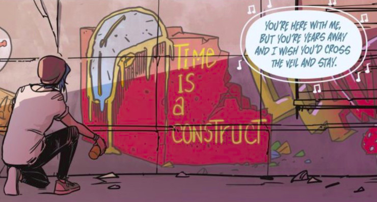
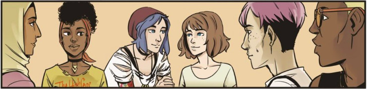
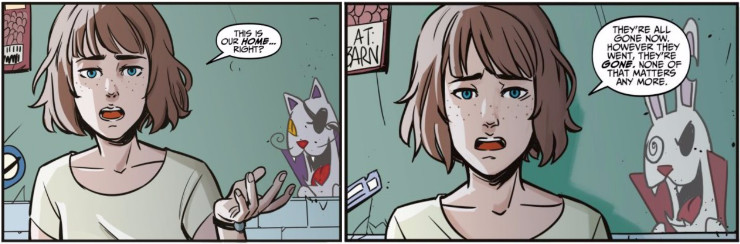
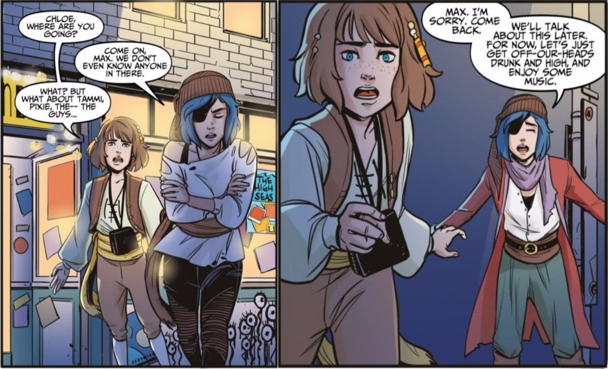

Life is Strange comic book vol. 1 (Dust #1)
Life is Strange comic book is a continuation of the story of Max and Chloe, taking place a year after the events depicted in the eponymous computer game. Max and Chloe live in Seattle and while it could appear that the worst is over and two girls are finally safe, a new, sudden danger emerges, threatening everything Max achieved since that memorable week in October.
Despite the fact I read the first issue of Life is Strange comic book back in November, when it was first published, I’m only posting my review now, three months later. One may say that the vortex of daily activities and work kept me from sharing my thoughts on the comic book, but I managed to break free.
I write about each issue of the comic book consecutively and you will find all reviews here. I wanted to make sure that my opinion won’t be biased by the knowledge of future events, so I wrote every review before reading the next issue of Life is Strange comic book (which means that as of this moment I still don’t know what happened in issues 2-4).
The first thing I noticed is clever (and a bit ominous) design of the front cover. It shows Max and Chloe holding hands in the middle of a deserted street in Arcadia Bay. The evening sky has deep red colour and some seagulls can be seen flying away from the horizon. There is something that appears to be a pool of water on the ground, reflecting Max’s silhouette. But not Chloe’s.
If there is one thing Life is Strange has taught me, it’s that not everything (and everyone) is what it seems to be. The same can be said about the cover illustration. When one turns the cover upside down a completely different image appears: Max is standing alone under a dark, stormy sky, facing a gargantuan tornado. The comic book has already given me the shiver, even before getting to the core part.
 Max and Chloe during a peaceful sunset or lone Max facing the storm? This is just one of many ambiguities deliberately placed in Life is Strange comic book
Max and Chloe during a peaceful sunset or lone Max facing the storm? This is just one of many ambiguities deliberately placed in Life is Strange comic book
First two pages serve as a recap of the Sacrifice Arcadia Bay ending, giving the reader a brief summary of events that lead to Max and Chloe leaving destroyed town once the tornado had dissipated. I like the fact this recap uses screen shots and quotes from the game and is made in a style similar to Max’s journal, with coffee stains, stickers and drawings scribbled on the margins.
The story begins with Max sitting alone under a heavy sky, looking at the horizon. It appears to me that she is sitting at the edge of a cliff, although I have no idea if it’s located in Arcadia Bay or somewhere else (the lighthouse or the town are nowhere to be seen). She thinks about the Chaos Theory and the Butterfly Effect.
Chaos theory. The Butterfly Effect. Whatever you call it, it suggests that the beat of a butterfly’s wings in Brazil can cause a hurricane in Texas. I used to wonder as a kid: if the butterfly knew what it was doing, the damage it was causing… would it keep on flying? For a while I thought I had an answer. I became the cause and the effect. I became the chaos of a butterfly’s wings until… I stopped. But then I saw the truth… I wasn’t the butterfly, I never was. … I was a particle of dust caught in the beat of its wings, just like everything else.
The whole scene is eerie and ominous. Max sitting alone, blue butterflies permeating the comic book frames, among them a few pale moths. As her thoughts reach the final conclusion the first drops of rain pierce the stormy air. And then one finally sees Max’s face. A single trace of blood goes from under her nose to her chin, signalising that she had (probably) just used her rewind power.
I must admit this is one hell of an opening. Based on the next part of the comic book, it’s surely a retrospection from the future, some significant event we haven’t seen yet (maybe even from a different timeline). Whatever it is, from whatever future, it gave me two important clues about the possible ending:
- Max is alive
- Chloe is not there
Now, there may be many reasons why Chloe is not featured in this scene, but if Life is Strange comic book is anything like the computer game, it probably doesn’t mean anything good…
Next page moves us forward (backward? After all, we still don’t know from what moment in time the opening scene was) to Seattle in 2014. We learn about new characters that accompany Max and Chloe. Pixie, Tammi, Dex and Dwight are in a rock band, the High Seas, that Max is a photographer of. It was strange to see these new people that spend time with Max and Chloe. I subconsciously wanted to see Kate, Dana, Juliet, maybe even Victoria, but of course that was not possible. While the Bae ending of Life is Strange purposely does not reveal who died during the storm that obliterated Arcadia Bay, one can assume that most of the characters we know did not make it, therefore Max and Chloe are most likely the only ones remaining from the original game. It didn’t ease my discomfort when I saw this new group of four, they just felt out of place for me. I could even accept Max and Chloe being alone, traumatised, without any friends, struggling with PTSD–that was more believable than the fact that they live like nothing happened, with a bunch of new friends.
It turned out that while Max is band’s photographer, Chloe designed their new logo, a pirate skull. And then our blue-haired girl appears for the first time, with a can of spray paint in her hand, creating a graffiti on a wall. An altered version of Salvador Dali’s The Persistence of Memory. I must admit that Chloe’s introduction was perfect. If there is anything I can imagine Chloe doing in a big city, making graffitis is definitely on the list. We also learn that Chloe has an internship in a repair shop, a job that was set up for her by Vanessa and Ryan.
 Chloe’s art has deeper meaning than one can see at the first look, especially considering her past adventures with Time
I don’t have vast experience with comic books (I prefer regular novels and stories with pure text, which doesn’t mean I don’t appreciate a good illustration), but I really like the style and the colours of Life is Strange comic book. While the graphic does indeed have a certain comic-book quality to it, it is not exaggerated as in many other titles. It is more soft, subtle, which fits perfectly the overall vibe of Life is Strange. Although both Max and Chloe look differently than in the game, they still look like themselves. The colours used in the comic book are pleasant to the eye, delicate pastel shades compose nice, mellow scenes.
The main event described in the first issue of the comic book is a special ceremony that will take place in Arcadia Bay in a few days, on the exact anniversary of the cataclysm that happened during the final episode of Life is Strange. It turned out that Sean Prescott and all his family survived, obviously save for Nathan (although I was intrigued to learn that officially his demise was to the storm and not the psychopathic teacher).
It is worth mentioning that the comic book tries to describe some brief, funny moments or interactions between Max and Chloe, known and loved by fans so much in the original Life is Strange. One example is girls’ impromptu escape to the bathroom when Pixie, the band drummer, starts sharing her new beats with involuntary audience in the pub. Sadly, those moments are few and far between, and in my opinion they do not live up to their predecessors in the game. I know that comic book is a limited medium and not everything that can be implemented i.e. in a written story or a computer game, will work as fine in a graphical medium, however some of interactions seem forced, unnatural.
 I like the soft palette of colours used in this comic book
Both Max and Chloe received separate invitations to the memorial event that will take place in Arcadia Bay. When they were discussing this in the pub’s bathroom (a bit strange place to look for solitary and safety after what had happened in Blackwell if you ask me) something weird happened. Max was talking to Chloe about her future in Seattle, sympathising with Chloe after the tragic events that presumably killed Joyce and David, but suddenly Chloe seemed to… forget about it.
“I know nothing can replace what you lost, but… I want you to be happy here, Chloe.”
“What I lost? Kinda dramatic Maximus. Sometimes I wonder if I should just move back and take mom’s offer of a job… I mean, maybe the diner isn’t so bad. Dad’s probably right.”
“I… what? Chloe…”
There was also one strange thing. The graffiti on the bathroom wall behind Max’s back changed as they were speaking. Crazy cat’s eyes were different at the beginning and at the end of the conversation. I don’t know what does it mean, but I have a bad feeling about this. I also noticed that Max was keeping a Polaroid selfie in her wallet, in which she was wearing exactly the same clothes as in the opening scene. Could this be the selfie she is going to use to photojump and change the past at some point? The photo was taken when Max learned she got Blackwell scholarship, before Jefferson, the bathroom and the storm. Maybe she can save everyone after all…
 Either this cat graffiti was done in a Harry-Potter-moving-pictures style or something is terribly wrong
On the next day Max and Chloe were going to band’s gig and, as one could expect of a band called the High Seas, it was a gig with a pirate theme. I felt a prick of nostalgia when I saw the girls in pirate outfits, as it reminded me of the Farewell episode of Before The Storm. But I didn’t have much time to contemplate the past, as weird things started to happen again. First, Chloe stood under the street lamp and told Max:
Just here, under this lamp, it’s quiet. Just here, we can choose to enter the party or run away. I’ve been here before. I mean, not literally here here, but here in this moment. With Rachel.
Well, I can’t say I’m happy with this particular dialogue, and it’s not because I ship Pricefield. It just seems strange that Chloe brought this particular memory to light just before going to the concert with Max. But that wasn’t the weirdest part. Suddenly Chloe started to walk away from Max and the pub1.
Come on, Max. We don’t even know anyone in here.
And now Chloe wore completely different outfit! Few seconds before she was in a full pirate costume with a red cape, a scarf and a shirt, now she was only wearing a torn white shirt, an eye-patch and long boots. If I was freaked out by the crazy cat’s mismatching eyes, you can imagine what was my reaction to seeing Chloe in various outfits throughout her conversation with Max. Max ran after Chloe only to get called back by… another Chloe, still waiting under the street lamp. She wore the exact outfit she came to the gig in in the first place. The other Chloe disappeared, as if she was never there.
And Max’s nose started bleeding.
 Which Chloe is real? What is real, and what is just an illusion?
Max told Chloe about everything and she concluded that all weird things started when she got that invitation to the memorial event in Arcadia Bay. Despite the strange things going on the girls decided to go to the High Seas concert anyway. As they were walking into a pub, Max took a last, long look at the now-empty street where the other Chloe used to be.
During the concert Max was staying with Chloe near the bar, but when she glanced at her watch, Chloe suddenly disappeared. It was happening again. Max was frantically searching for Chloe, but no one seen her, no one even seemed to remember her, even despite the fact a few people in the pub knew her. When Max reached the stage, she asked Tammi about Chloe.
“Tammi! Chloe, I lost Chloe. She was here and–”
“Chloe? Chloe Price? Your friend from Arcadia Bay?”
“Yes!”
“Max… You know that Chloe–”
And then everything returned to normal. Chloe was at Max’s side and hold her, partially collapsed on the floor. When she realised what had happened, she made a decision. They were returning to Arcadia Bay.
I was disappointed that the first issue of Life is Strange comic book concluded already. Just when the story started to be truly intriguing, it had to end. On the other hand it was a perfect moment to finish the first part of the story, before Max and Chloe actually go back to Arcadia Bay (I guess that’s where the second issue starts). Overall I think that the the first part of the Dust series was good. Not very good, not hardly good, just plainly good. To be honest, I was expecting something else–a bit more hurt and comfort, maybe a bit more of different emotions than the ones displayed here and definitely more intimate (read: close, personal) relations between Max and Chloe. I don’t want to judge the whole series on the basis of the first issue, therefore I’ll just point things I liked (or not so much) in the first volume of Life is Strange comic book.
Yay!
- graphical style and palette of colours
- Max and Chloe
- elements of the scene changing during the “strange sequences”
- lyrics of the High Seas’ song
- pirate theme
Nay!
- girls’ new friends from the band
- unrealistic emotions (i.e. no sign of PTSD)
- no intimacy (this ain’t no Pricefield!)
- some dialogues and scenes seem to be out of character
- far too short, even for a single issue
Overall summary in three words
mellow, lacking, short
-
The name of the pub, the Beans Barn, is a nice easter egg referring to Frank’s favourite meal. ↩